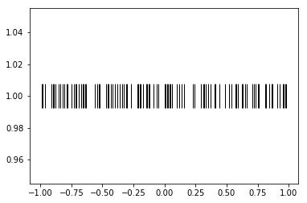

# Module 09 - Handling spiking data¶
# Goals¶
- Describe spike trains through binning and spike density functions
- Describe spike trains by their interspike intervals (ISIs)
- Compute an autocorrelation function (ACF) and crosscorrelation function (CCF)
- Generating fake spike data
# Determine firing rates¶
In [1]:
# import necessary packages
%matplotlib inline
import os
import numpy as np
import nept
import matplotlib.pyplot as plt
import scipy.signal
# define where your data folder is located
data_path = os.path.join(os.path.abspath('.'), 'data')
data_folder = os.path.join(data_path, 'R042-2013-08-18')
In [2]:
# load the info file, which contains experiment-specific information
import r042d3 as info
---------------------------------------------------------------------------
ImportError Traceback (most recent call last)
<ipython-input-2-167e83d3dd57> in <module>()
1 # load the info file, which contains experiment-specific information
----> 2 import r042d3 as info
ImportError: No module named 'r042d3'
In [3]:
# Load spikes (.t and ._t) from this experiment
spikes = nept.load_spikes(data_folder)
---------------------------------------------------------------------------
FileNotFoundError Traceback (most recent call last)
<ipython-input-3-fa297a4ab831> in <module>()
1 # Load spikes (.t and ._t) from this experiment
----> 2 spikes = nept.load_spikes(data_folder)
/home/emily/code/nept/nept/loaders_mclust.py in load_spikes(filepath, load_questionable)
106 spikes = []
107
--> 108 for file in os.listdir(filepath):
109 if file.endswith(".t"):
110 label = file[18:20]
FileNotFoundError: [Errno 2] No such file or directory: '/home/emily/code/nept/docs/tutorials/.ipynb_checkpoints/data/R042-2013-08-18'
In [4]:
# Let's limit our investigation to one neuron
neuron_idx = 31
these_spikes = spikes[neuron_idx]
# And restrict the time so we can more easily see what's going on
start = 5801.0
stop = 5801.7
filtered_spikes = these_spikes.time_slice(start, stop)
---------------------------------------------------------------------------
NameError Traceback (most recent call last)
<ipython-input-4-005137471548> in <module>()
1 # Let's limit our investigation to one neuron
2 neuron_idx = 31
----> 3 these_spikes = spikes[neuron_idx]
4
5 # And restrict the time so we can more easily see what's going on
NameError: name 'spikes' is not defined
In [5]:
# Plot the spikes
plt.plot(filtered_spikes.time, np.ones(len(filtered_spikes.time)), '|', ms=30)
plt.show()
---------------------------------------------------------------------------
NameError Traceback (most recent call last)
<ipython-input-5-a3d0370d7ff3> in <module>()
1 # Plot the spikes
----> 2 plt.plot(filtered_spikes.time, np.ones(len(filtered_spikes.time)), '|', ms=30)
3 plt.show()
NameError: name 'filtered_spikes' is not defined
In [6]:
# Create an AnalogSignal used to define the time edges for the binned spikes
edges = nept.AnalogSignal(np.ones(20), np.linspace(start, stop, 20))
---------------------------------------------------------------------------
NameError Traceback (most recent call last)
<ipython-input-6-7d42fcb587ec> in <module>()
1 # Create an AnalogSignal used to define the time edges for the binned spikes
----> 2 edges = nept.AnalogSignal(np.ones(20), np.linspace(start, stop, 20))
NameError: name 'start' is not defined
In [7]:
# Bin the spikes
window_advance = 0.1
time_edges = nept.get_edges(edges, window_advance, lastbin=True)
---------------------------------------------------------------------------
NameError Traceback (most recent call last)
<ipython-input-7-6ff0a439b560> in <module>()
1 # Bin the spikes
2 window_advance = 0.1
----> 3 time_edges = nept.get_edges(edges, window_advance, lastbin=True)
NameError: name 'edges' is not defined
In [8]:
# Plot the spikes
plt.plot(filtered_spikes.time, np.ones(len(filtered_spikes.time))-2, '|', ms=30)
# Plot the number of spikes in each bin
plt.hist(filtered_spikes.time, time_edges)
plt.show()
---------------------------------------------------------------------------
NameError Traceback (most recent call last)
<ipython-input-8-6d231ef0e06a> in <module>()
1 # Plot the spikes
----> 2 plt.plot(filtered_spikes.time, np.ones(len(filtered_spikes.time))-2, '|', ms=30)
3
4 # Plot the number of spikes in each bin
5 plt.hist(filtered_spikes.time, time_edges)
NameError: name 'filtered_spikes' is not defined
In [9]:
# Now let's look at a spike density function (SDF; convolved spike train)
# for this SDF we need a smaller bin size
bin_size = 0.001
sdf_edges = np.arange(start, stop, bin_size)
sdf_centers = sdf_edges[:-1]+bin_size/2
# Make a gaussian filter
gaussian_window = 1.0 / bin_size
gaussian_std = 0.02 / bin_size
gaussian_kernel = scipy.signal.gaussian(gaussian_window, gaussian_std)
gaussian_kernel /= np.sum(gaussian_kernel)
gaussian_kernel /= bin_size
# Bin the spikes
spike_count = np.histogram(filtered_spikes.time, bins=sdf_edges)[0]
# Convolve the binned spikes by the gaussian filter
convolved_spiketimes = scipy.signal.convolve(spike_count, gaussian_kernel, mode='same')
---------------------------------------------------------------------------
NameError Traceback (most recent call last)
<ipython-input-9-80c6fa872189> in <module>()
3 bin_size = 0.001
4
----> 5 sdf_edges = np.arange(start, stop, bin_size)
6 sdf_centers = sdf_edges[:-1]+bin_size/2
7
NameError: name 'start' is not defined
In [10]:
# Plot the spikes
plt.plot(filtered_spikes.time, np.ones(len(filtered_spikes.time))-2, '|', ms=30)
# Plot the spike density function
plt.plot(sdf_centers, convolved_spiketimes)
plt.show()
---------------------------------------------------------------------------
NameError Traceback (most recent call last)
<ipython-input-10-a9169a907c05> in <module>()
1 # Plot the spikes
----> 2 plt.plot(filtered_spikes.time, np.ones(len(filtered_spikes.time))-2, '|', ms=30)
3
4 # Plot the spike density function
5 plt.plot(sdf_centers, convolved_spiketimes)
NameError: name 'filtered_spikes' is not defined
# Interspike intervals (ISIs)¶
In [11]:
# Let's work with the same neuron as before, this time with the spikes from the entire session.
# Plot the spikes
plt.plot(these_spikes.time, np.ones(len(these_spikes.time)), '|', ms=30)
plt.show()
---------------------------------------------------------------------------
NameError Traceback (most recent call last)
<ipython-input-11-895cddf29e04> in <module>()
1 # Let's work with the same neuron as before, this time with the spikes from the entire session.
2 # Plot the spikes
----> 3 plt.plot(these_spikes.time, np.ones(len(these_spikes.time)), '|', ms=30)
4 plt.show()
NameError: name 'these_spikes' is not defined
In [12]:
# Find the duration of the interspike intervals
isi = np.diff(these_spikes.time)
---------------------------------------------------------------------------
NameError Traceback (most recent call last)
<ipython-input-12-f16986740233> in <module>()
1 # Find the duration of the interspike intervals
----> 2 isi = np.diff(these_spikes.time)
NameError: name 'these_spikes' is not defined
In [13]:
# Plot the binned ISIs
plt.hist(isi, 50)
plt.ylim(0, 120)
plt.show()
---------------------------------------------------------------------------
NameError Traceback (most recent call last)
<ipython-input-13-05d679d907ce> in <module>()
1 # Plot the binned ISIs
----> 2 plt.hist(isi, 50)
3 plt.ylim(0, 120)
4 plt.show()
NameError: name 'isi' is not defined
# Spike autocorrelation function (ACF)¶
In [14]:
def autocorrelation(spiketimes, bin_size, max_time):
"""Computes the autocorrelation for an individual spiketrain.
Parameters
----------
spiketimes : np.array
bin_size : float
max_time : float
Returns
-------
aurocorrelation : np.array
bin_centers : np.array
"""
bin_centers = np.arange(-max_time-bin_size, max_time+bin_size, bin_size)
autocorrelation = np.zeros(bin_centers.shape[0]-1)
for spike in spiketimes:
relative_spike_time = spiketimes - spike
autocorrelation += np.histogram(relative_spike_time, bin_centers)[0]
bin_centers = bin_centers[2:-1]
autocorrelation = autocorrelation[1:-1]
# Normalize the autocorrelation
autocorrelation /= np.max(autocorrelation)
return autocorrelation, bin_centers
In [15]:
# Find the autocorrelation for our spikes of interest
acf, bin_centers = autocorrelation(these_spikes.time, bin_size=0.001, max_time=1.)
# Plot the autocorrelation
plt.plot(bin_centers, acf)
plt.show()
---------------------------------------------------------------------------
NameError Traceback (most recent call last)
<ipython-input-15-5e461a8e6dbf> in <module>()
1 # Find the autocorrelation for our spikes of interest
----> 2 acf, bin_centers = autocorrelation(these_spikes.time, bin_size=0.001, max_time=1.)
3
4 # Plot the autocorrelation
5 plt.plot(bin_centers, acf)
NameError: name 'these_spikes' is not defined
# Spike cross-correlation function (CCF)¶
In [16]:
def crosscorrelation(spiketimes1, spiketimes2, bin_size, max_time):
"""Computes the autocorrelation for an individual spiketrain.
Parameters
----------
spiketimes1 : np.array
spiketimes2 : np.array
bin_size : float
max_time : float
Returns
-------
crosscorrelation : np.array
bin_centers : np.array
"""
bin_centers = np.arange(-max_time-bin_size, max_time+bin_size, bin_size)
crosscorrelation = np.zeros(bin_centers.shape[0]-1)
for spike in spiketimes1:
relative_spike_time = spiketimes2 - spike
crosscorrelation += np.histogram(relative_spike_time, bin_centers)[0]
bin_centers = bin_centers[2:-1]
crosscorrelation = crosscorrelation[1:-1]
# Normalize the crosscorrelation by the number of spikes in the first input
crosscorrelation /= len(spiketimes1)
return crosscorrelation, bin_centers
In [17]:
# limit spikes to task times
task_start = info.task_times['task'].start
task_stop = info.task_times['task'].stop
task_spikes = [spiketrain.time_slice(task_start, task_stop) for spiketrain in spikes]
# Find the crosscorrelation for our spikes of interest
idx1 = 73
idx2 = 31
ccf, bin_centers = crosscorrelation(task_spikes[idx1].time, task_spikes[idx2].time,
bin_size=0.01, max_time=1.)
# Plot the crosscorrelation
plt.plot(bin_centers, ccf)
plt.show()
---------------------------------------------------------------------------
NameError Traceback (most recent call last)
<ipython-input-17-f3d37447d5ac> in <module>()
1 # limit spikes to task times
----> 2 task_start = info.task_times['task'].start
3 task_stop = info.task_times['task'].stop
4
5 task_spikes = [spiketrain.time_slice(task_start, task_stop) for spiketrain in spikes]
NameError: name 'info' is not defined
# Generating fake spike data¶
In [18]:
# Generate a fake spike train
dt = 0.01
spiketime = np.arange(-1, 1, dt)
probability = 0.5
random_values = np.random.random((1, len(spiketime)))
spike_idx = np.where(random_values < probability)[1]
poisson_spikes = nept.SpikeTrain(spiketime[spike_idx])
# Plot the fake spikes
plt.plot(poisson_spikes.time, np.ones(len(poisson_spikes.time)), '|', ms=30, color='k')
plt.show()

In [19]: